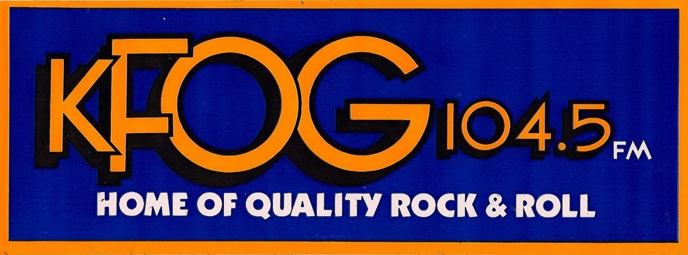

Mein Weg durch den Golden Gate Park bis zum UCSF Medical Center (rechts oben am Hang).
1984–1987
Am 1. Dezember 1984 begann mein erster Arbeitstag an der UCSF. Morgens gegen acht stieg ich in meinen Hirsch und fuhr los. Von der 39th Avenue über die Noriega Street, dann die Irving entlang bis zur 25ten Straße und hinein in den Golden Gate Park. Dort immer den Martin-Luther-King-Drive entlang bis hoch zur 2nd Avenue, wo ich parkte.
Ich liebte diesen Weg.
Immer lief K-FOG auf 104,5. Mein Haussender. Begrüßt wurde man mit: „San Francisco's Home of Quality Rock and Roll. One Oh Four Point Five, KFOG.“ Bonnie Simmons moderierte die Morgensendung für die „Fogheads“, die treuen Hörer. Und Bonnie wusste genau, was wir hören wollten. Mr. Mister mit Kyrie. Mike and the Mechanics mit All I Need Is a Miracle. Und die vielen anderen tollen Songs: Die Hooters mit And We Danced, John Waite mit Missing You. Und natürlich Foreigner mit I Want To Know What Love Is. Und schließlich auch die San Francisco-Hausband Starship mit Sara und We Built This City.

Ich drehte das Radio auf volle Lautstärke, kurbelte das Fenster herunter und fuhr durch den Park. Manchmal lag über dem Sunset District noch der Nebel, während es im Park bereits aufklarte oder der Himmel bereits blau war. Es waren kaum Menschen unterwegs. Ein paar Jogger, viele davon reichlich fett, die sich wohl in den Tagen zuvor im Spiegel betrachtet hatten und meinten, sie werden jetzt gertenschlank. Hundebesitzer. Einer, der regelmäßig seine Ente an der Leine spazieren führte. Und sonstige kalifornische Spinner und leicht bis schwer Gestörte.
Wenn Kyrie oder All I Need Is a Miracle im Radio liefen, dann musste ich mich manchmal kneifen.
Wenige Monate zuvor hatte ich noch im Teschemacher-Labor in Gießen gearbeitet. Siebter Stock Pharmakologie. Endorphine, Komplementfaktoren, Radioimmunassays und Literaturberge. Jetzt fuhr ich durch den Golden Gate Park, hörte amerikanisches Radio und arbeitete in einem Labor, das damals zu den namhaftesten der Welt gehörte. Deutschland war weit weg. Sehr weit. Und das nicht nur geografisch.
Gelegentlich führte mich die Arbeit auch nach Vallejo. Das war kein kleiner Ausflug. Es ging an Downtown vorbei über die Bay Bridge nach Oakland, dann immer an der Bay entlang bis zur San Pablo Bay. Dort musste man über die Carquinez-Brücke. Viele mochten diese Brücke nicht besonders. Ich auch nicht. Sie war schmal, hoch und wacklig bis altersschwach. Jedes Mal war ich froh, wenn ich auf der anderen Seite angekommen war. Dort befand sich der Schlachthof.
Normale Menschen kaufen im Schlachthof Fleisch. Wir kauften Rinderaugen, Hirnanhangdrüsen, Nebennieren und gelegentlich ganze Rinderhirne. Die Rinderaugen brauchten wir für die Gewinnung extrazellulärer Matrix. Aus den anderen Geweben wurde später FGF extrahiert. Also lud ich die kostbare Fracht ins Auto und machte mich auf den Rückweg nach San Francisco.
Im Radio lief……K-FOG!
Wenn ich über die Bay Bridge zurückfuhr, konnte ich oft sehen, wie der Nebel durch das Golden Gate in die Bay hineinströmte. Wie Milchbrei. Bonnie Simmons kündigte die nächste Platte an. Es liefen Foreigner, Starship oder die Hooters. Ich fand, es gab schlechtere Wege zur Arbeit.
Und manchmal, wenn ich so an der Bay entlang oder durch den Golden Gate Park fuhr, kam mir Deutschland vor wie ein Traum, den ich nie geträumt hatte.